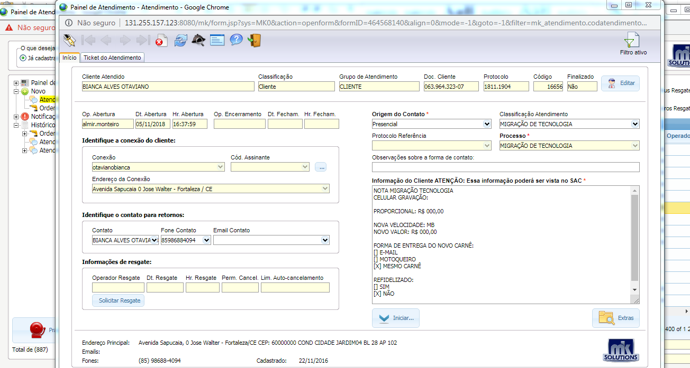

Voltar
Voltar
Migração
- Financeiro Agily Telecom (nome + comprimentos)
- Confirmar as informações cadastrais
- Qual o nome do titular do contrato?
- Acessar o mk Solutions a aba, Suporte / Painel de atendimento e serviço/ painel de atendimento
- Na aba Código/ Nome; informar o nome do titular e clicar ok
- Clicar na aba cadastro e confirmar os dados

- Qual Endereço e cep ?
- telefones para contato ( Obs.: Atualizar os números )
- Qual watsap ?
- Qual o e-mail ? (Obs.: Atualizar e-mail ou colocar não tem)

Migração de tecnologia
Fazer as seguintes verificações:
- Verificar se tem ticket aberto para esse cliente; Na aba painel de atendimento/ Atendimento/ histórico /Atendimento.
No caso ticket aberto informar ao cliente para aguardar o retorno de ligação do financeiro
- Verificar se tem O.S aberta para esse cliente; Na aba painel de atendimento/ Atendimento/ histórico /Ordens de serviço.
No caso de O.S aberta informar ao cliente para aguardar atendimento.
- Verificar pendências financeiras: Na aba Financeiro / Painel Contas e faturamentos
No casso de pendencias informar o cliente, que a O.S só poderá ser aberta após o pagamento do debito.
Valor da Migração
- A migração e gratuita se o valor do plano ficar maior que o atual, se o valor permanecer o mesmo será cobrado R$ 60.
- Verificar no endereço do cliente se tem viabilidade, ou se excedera o limite de instalação de 150 mts, se passar dessa metragem informar ao cliente o valor R$ 1 por metro de fibra excedente.
- Verificar com o cliente qual será o plano de acesso.
IMPORTANTE : Informar que o titular deverá esta no local dia e hora marcado para assinar o contrato, e que será necessário devolver o carne anterior para ser dado baixo nas parcelas.
Abertura do ticket :
Após essas verificações, selecionar a aba novo e preencher os campos no painel de atendimento:
Origem do contato= telefônico
Processo = Migração de tecnologia
Informação do cliente= Informar a solicitação com novo plano de acesso, valor do serviço, Gravar e Iniciar.
Encaminhar para o Sub processo Auditoria Agendamento

- Finalizar o atendimento, Informar ao cliente que o setor ira entrar em contato com ele para agendar o horário da Instalação.
Voltar